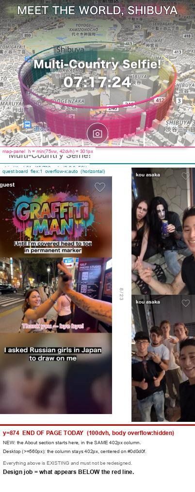

toopdbq.com のトップは今 100dvh で終わっていて、初めて来た人は何のサービスか分からないまま離れる。
その下にスクロールで現れる読み物を作る。仕様の正は HANDOFF.md（全文コピー・契約・フラグはそちら）。
実測図。上は既存で再設計しない。402px カラムの中でそのまま下に続ける。

| 実測 | 効いてくるところ |
|---|---|
カラム 402px 固定@media (min-width:560px) で 402px 中央・外側 #0d0d0f |
PC でも 2 カラムにならない。デスクトップ専用レイアウトを作らない |
| About の開始 y = 874 map-panel 301 / strip-title 34 / board 残り |
board は overflow-x:auto の横スクロール。縦スワイプを奪わない継ぎ目にする |
今日はスクロールが存在しないhtml,body{overflow:hidden} |
「下に続く」ことを視覚で示す責任がデザイン側。見切れ / ヒント / 段差、案ごとに違う解を |
| 予算 現行 54.7KB・FCP ≈ 1s |
追加は HTML+CSS 30KB / JS 3KB 以内。below-the-fold・lazy 必須 |
| アイコン PNG は純白 1 色（実測 uniqRGB=1） ロゴは白いバラ（820×865・ほぼ白） |
白地にそのまま置けない。着色は mask、ワードマークはテキスト + グラデ |
現行トップにインライン済みの実値。新しい色を発明しない（参考紙面のオレンジは DS に無い）。
配布用インフォグラフィックの情報設計だけを引き継ぐ。見た目は Toopdbq のデザインシステムへ寄せる。
| 参考紙面がやっていること | Toopdbq ではこうする |
|---|---|
| 番号バッジ + 見出し + 本文 + 右に図 のカードを 8 枚 | 順序と粒度は踏襲。402px 幅で成立する形に組み直す |
| 明るいティールの見出し | #005f67（DS 実値。紙面より暗く沈んだ緑） |
番号のオレンジ #f2762e | DS にオレンジは無い → #ff3e88 か --gcl。前半／後半で色を変える切替は踏襲可 |
| ストックイラスト（人物シルエット・カメラ・木） | 実写真 assets/sample/{reel,user,uv} ＋ 実 UI 部品（UniverseQuest / QuestBoard からコピー） |
| ぼかし 4 枚 → ひらく の図 | そのまま強い。実写真 + filter:blur() + 鍵で再現。ここが全体の主役 |
| ピンドロップ風ロゴ | Toopdbq の正式マークではない。不採用 |
| 紙面なので全章が同じ密度 | web はスクロール。密度に強弱を付ける（章 3 と章 5 が山） |
コピーは HANDOFF.md に全文。一字一句このまま。語を足さない。
クエストって、なに？ ＋ 一行の定義
地図の上の輪。EriaWall（光の壁）
お題 + カウントダウン（現行トップの実物）
輪の内 / 外。外の人は答えられない
撮る → 出す。カメラ FAB
ぼかし → ひらく。この節が主役
投稿 1 枚 + いいね。人でなく投稿が主役
使い道は 2 つだけ。地図に自分は出ない
長文 5 段落。図は無し or 最小
一行の約束 ＋ CTA（フラグ①）
似た案を 2 つ出さない。3 案とも全 8 章 + ヒーロー + クロージングを含み、継ぎ目の解を持つ。
文が主・図が従。静かで長い。章間は余白と細い罫だけ。1 章 = 1 スクリーン未満。画面いっぱいの図を使わない。
図が主・文が従。1 章 ≒ 1 画面。スクロールで図が変わる（ぼかしが取れる / 輪が閉じる）。静止しても意味が通ること。
参考紙面を web へ。番号バッジ + カードの積層。密度が高く一望できる。紙面の横並びをそのまま縮めない。
App Store 審査中・Google Play 未公開でストアリンクを今は張れない。置かない / 文言だけ / トップへ戻す、のどれかを案ごとに。
「Toopdbq は、そのきっかけをつくるアプリです。」は参考紙面から採った文で支給テキストには無い。採用可否を提示する。
紙面には人物イラストがあるが、DS には実写真しかなく本人写真も無い。イラストは禁止。置く / 置かないを案ごとに。
支給全文は約 1,700 字。全部読ませるか、章 8 を折りたたむか。トップ下の読み物としての許容量を案の差にする。
position:fixed を置かない（iOS Safari のバー裏描画がロード時に固定されるため）prefers-reduced-motion:reduce で全アニメ停止。それでも全章が読めること